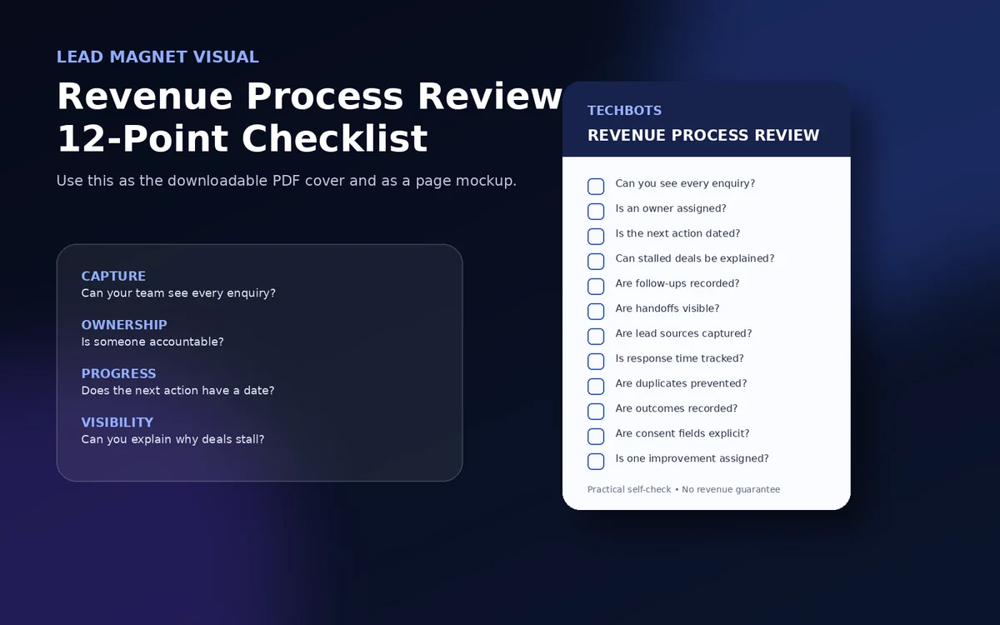

⌁
Capture
Can your team see every enquiry?
WebsiteWhatsAppCallsEmail
Use a practical 12-point checklist to review lead capture, ownership and follow-up, then choose the first improvement to test.
Illustrative example only. Your review uses your own records.
Getting enquiries is only the beginning. The real question is what happens after someone contacts your business.
The Revenue Process Review helps you see whether each opportunity is captured, owned, followed up and moved toward a clear next action.
Capture Did every enquiry make it into the process?
Ownership Does every opportunity have one accountable person?
Follow-up Is there a dated next action?
Visibility Can you explain why it moved or stalled?
Review 10 real enquiries. Find one process improvement to test.
You do not need more activity for activity's sake. You need to know whether enquiries are visible, owned, progressing and explainable.
Can your team see every enquiry?
Is one person accountable for each opportunity?
Does every live opportunity have a dated next action?
Can you explain why opportunities move, pause or stall?
Use the checklist against your last ten enquiries. Answer from actual records, not memory, then choose the first gap worth fixing.
Can you identify every enquiry received during the review period?
Does every open opportunity have a named owner?
Does every active opportunity have a dated next action?

Useful when you know leads are coming in but cannot confidently explain what happens after first contact.
Review the records that need attention first instead of relying on message counts and anecdotal updates.
Identify where process, handoffs or visibility break before replacing the tools your team already uses.
Use actual records, not reconstructed memory.
Mark what is visible, owned, dated and explainable.
Review the result before adding more complexity.
Start small. Measure the process before replacing the technology.
Enter your details and the checklist will be made available immediately once the live resource is connected.
Your choices stay separate.
Requesting the checklist does not silently subscribe you to marketing.
Download it below. If you requested email delivery, check your inbox shortly.
Preview mode is on. Connect the final PDF and form endpoint before public launch.
Techbots connects software, AI, automation and business workflows around practical operating needs. The goal here is not to replace your stack on day one. It is to understand where the process breaks first.
Connected systems
Software, AI, automation and workflows designed around the same operating outcome.
Practical review
Use records, ownership and next actions rather than vague activity metrics.
Implementation path
Move from diagnosis to the smallest useful process or technology improvement.
The checklist is meant to create clarity, not manufacture a dramatic number for a presentation nobody believes.
No. It identifies sales-process risks and improvement priorities. It does not estimate guaranteed revenue recovery.
No. Start by reviewing your existing process and records. Technology changes should follow a clearly identified operating need.
Yes. After the checklist is delivered, you can use the optional consultation link to discuss what you found.
Review ten real enquiries, identify the first gap and decide what should change next.